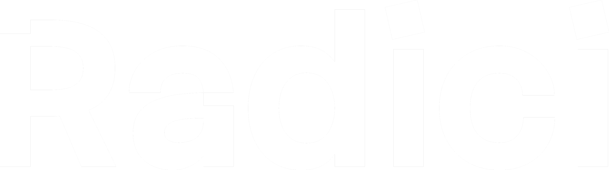
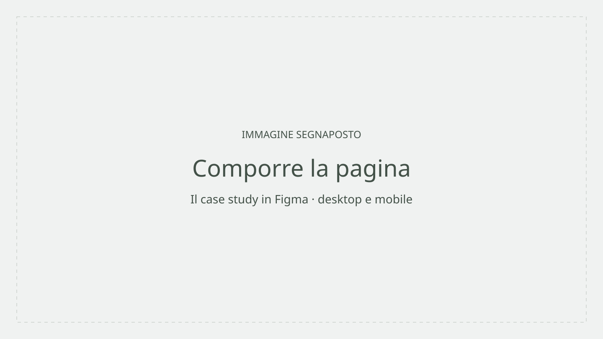

ALESSANDRO VINCENZI · UI/UX Design · 2026/2027
Radici.
Un archivio di ricordi
Un progetto digitale nato per raccogliere e valorizzare ricordi familiari attraverso fotografie e storie.

Alessandro Vincenzi
ITS Web Design e Strategie Digitali
UI/UX Design
ITS Accademy I-CREA, CFP Bauer Milano. 2026/2027
Dal progetto al case study
Anche questa pagina è un progetto
Per raccontare Radici ho progettato una seconda interfaccia: questo case study. Ho studiato Primer Brand e combinato i suoi componenti per dare una forma coerente al racconto.



-
Sono partito dalla documentazione e dalle pagine GitHub: tipografia, colori, spazi e comportamenti formano un insieme di decisioni. Ho usato Primer Brand come vocabolario per costruire la mia pagina.
-
Ho selezionato gli elaborati e dato a ogni contenuto una forma: Pillar per i livelli di lettura, Tabs per le viste, Testimonial per una riflessione. Gerarchie e spazi collegano i capitoli; sul mobile la composizione cambia disposizione.
-
Il lavoro continua nel browser: controllo la leggibilità, i collegamenti e i controlli da tastiera a larghezze diverse. La prova pratica richiede anche di saper spiegare e modificare il codice, mantenere Figma e sito coerenti e pubblicare il lavoro con GitHub Pages.